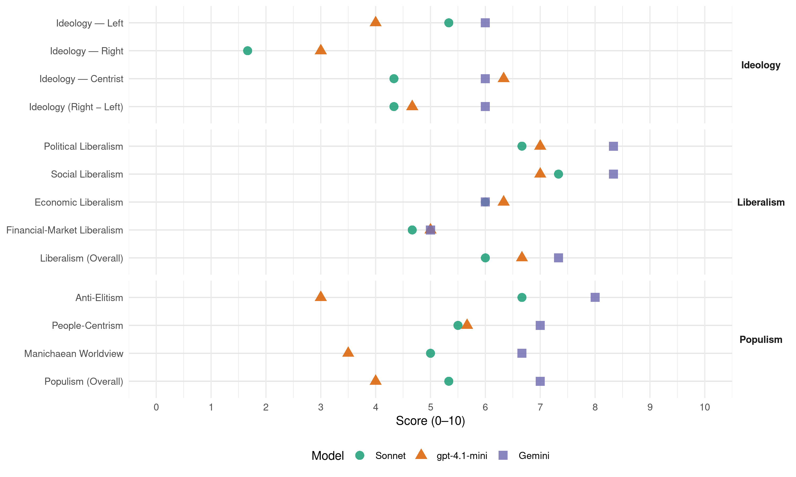

DCG (Montenegro, 2016)
manifesto_id 91440_201610
Get full text: This site shows derived annotations and short verbatim quotes only. The full manifesto text is © Manifesto Project / WZB — obtain it via manifesto-project.wzb.eu using the manifesto_id above.
Headline scores
| Dimension | Sonnet | gpt-4.1-mini | Gemini |
|---|---|---|---|
| Populism (Overall) | 5.3 | 4.0 | 7.0 |
| Anti-Elitism | 6.7 | 3.0 | 8.0 |
| People-Centrism | 5.5 | 5.7 | 7.0 |
| Manichaean Worldview | 5.0 | 3.5 | 6.7 |
| Ideology (Right − Left) | 4.3 | 4.7 | 6.0 |
| Liberalism (Overall) | 6.0 | 6.7 | 7.3 |
| Political Liberalism | 6.7 | 7.0 | 8.3 |
| Social Liberalism | 7.3 | 7.0 | 8.3 |
| Economic Liberalism | 6.0 | 6.3 | 6.0 |
| Financial-Market Liberalism | 4.7 | 5.0 | 5.0 |
Evidence per dimension
Economic Liberalism
Gemini · score 7.0 · verified · chunk 1
“jačanju konkurencije i stvaranju boljih uslova za život”
razgovaramo o investicijama , efikasnijoj i sigurnijoj ekonomiji, savremenom obrazovanju, jačanju konkurencije i stvaranju boljih uslova za život svih građana Crne Gore.
Gemini · score 6.0 · verified · chunk 2
“razvoj malih i srednjih preduzeća”
preduzimanje konkretnih mjera za obnavljanje proizvodnje i razvoj malih i srednjih preduzeća, kako bi obezbijedili regulisanje
Gemini · score 5.0 · verified · chunk 3
“olakšao ulazak na tržište”
reforma javne uprave, kako bi se investitorima u turizmu olakšao ulazak na tržište; izgradnju hotelskih kapaciteta
gpt-4.1-mini · score 7.0 · verified · chunk 1
“ubrzani i održivi privredni i ekonomski razvoj Crne Gore; ravnomjeran regionalni razvoj”
Demokrate se zalažu za: ubrzani i održivi privredni i ekonomski razvoj Crne Gore; ravnomjeran regionalni razvoj, smanjenje depopulacije i migracije stanovništva iz nerazvijenih sredina u gradove; zaštitu prava manjina u skladu sa međunarodnim i evropskim standardima;
gpt-4.1-mini · score 6.0 · verified · chunk 2
“povećanje kapitalnih ulaganja posebno vodeći računa o sjeveru zemlje i saobraćajnoj infrastrukturi kao osnovu regionalnog razvoja”
Ravnomjeran regionalni razvoj kao strateški prioritet Crne Gore i uslov ekonomskog oporavka i prosperiteta posebno devastiranih područja; zakonske izmjene koje će omogućiti veći fiskalni zahvat u pripadajućem dijelu prihoda lokalnih samouprava; valorizaciju prirodnih bogatstava u interesu lokalnih samouprava na čijoj teritoriji se nalaze i sprječavanje bezakonja i otimačine u ovoj oblasti; povećanje kapitalnih ulaganja posebno vodeći računa o sjeveru zemlje i saobraćajnoj infrastrukturi kao osnovu regionalnog razvoja; mnogo veća izdvajanja iz Budžeta za agro-budžet i razvoj preduzetništva; poreske olakšice poslodavcima koji otvaraju nova radna mjesta u nerazvijenim opštinama; podsticanje efikasnije saradnje lokalnih samouprava i institucija EU kako na polju edukacije, tako i korišćenja sredstava iz fondova EU za regionalnu politiku; afirmaciju prirodnih bogatstava, regionalnih i lokalnih kultura, njihovih različitosti i specifičnosti kao vidova turističke ponude.
gpt-4.1-mini · score 6.0 · verified · chunk 3
“privatizacijom gotovo cio stambeni fond u društvenoj svojini, država je rješavanje stambene potrebe svojih građana prepustila stihiji tržišta”
…Nakon što je početkom devedesetih po simboličnim cijenama privatizovala gotovo cio stambeni fond u društvenoj svojini, država je rješavanje stambene potrebe svojih građana prepustila stihiji tržišta, odbijajući da vrati sebe na mjesto kreatora i voditelja stambene politike…
Sonnet · score 5.0 · mixed · chunk 1
“jačanje konkurencije i stvaranju boljih uslova”
razgovaramo o investicijama, efikasnijoj i sigurnijoj ekonomiji, savremenom obrazovanju, jačanju konkurencije i stvaranju boljih uslova za život svih građana
Sonnet · score 6.0 · verified · chunk 2
“podsticanje zdrave konkurencije”
adekvatnom stepenu zaštite trenerske struke i podsticanju zdrave konkurencije
Sonnet · score 6.0 · verified · chunk 3
“reforma javne uprave, kako bi se investitorima u turizmu olakšao ulazak na tržište”
reforma javne uprave, kako bi se investitorima u turizmu olakšao ulazak na tržište; izgradnju hotelskih kapaciteta, posebno u onim gradovima
Financial-Market Liberalism
Gemini · score 5.0 · verified · chunk 1
“dominantnu ulogu banaka što nije karakteristika anglosaksonskog”
U Crnoj Gori je tržište kapitala mlado i nerazvijeno i imamo dominantnu ulogu banaka što nije karakteristika anglosaksonskog sistema, koji je Crna Gora utemeljila
gpt-4.1-mini · score 5.0 · verified · chunk 3
“Trošenje državnog novca u Crnoj Gori nije transparentno i dostupno građanima putem interneta u okviru sistema E-uprave”
…Trošenje državnog novca u Crnoj Gori nije transparentno i dostupno građanima putem interneta u okviru sistema E-uprave. Ne postoje jedinstvene baze podataka o utrošku finansijskih sredstava na nivou države…
Sonnet · score 4.0 · verified · chunk 1
“tržište kapitala mlado i nerazvijeno”
U Crnoj Gori je tržište kapitala mlado i nerazvijeno i imamo dominantnu ulogu banaka što nije karakteristika anglosaksonskog sistema
Sonnet · score 5.0 · verified · chunk 2
“povoljnim kreditima sa najnižom kamatnom stopom”
pomoć mladim bračnim parovima u rješavanju stambenih problema davanjem povoljnih kredita sa najnižom kamatnom stopom, davanjem subvencija
Sonnet · score 5.0 · verified · chunk 3
“progresivnim oporezivanjem viška stanova”
Sredstva za funkcionisanje fonda bi se obezbjedila kombinovanjem različitih izvora: progresivnim oporezivanjem viška stanova (stanova koji nijesu objekti osnovnog stanovanja
Political Liberalism
Gemini · score 9.0 · verified · chunk 1
“nezavisnost, samostalnost, nepristrasnost i odgovornost pravosuđa”
Osnovne vrijednosti koje vidimo kao smisao pravosudnih reformi jesu: a. Nezavisnost, samostalnost, nepristrasnost i odgovornost pravosuđa; b. Povećanje stepena povjerenja u pravosuđe
Gemini · score 8.0 · verified · chunk 2
“vladavina prava kao temelj jednakosti i stvaranja pravne sigurnosti”
U Crnoj Gori ne postoji vladavina prava kao temelj jednakosti i stvaranja pravne sigurnosti pojedinca, ali i čitavog društva
Gemini · score 8.0 · verified · chunk 3
“slobodno novinarstvo je jedan od osnovnih postulata”
Mediji su građanska svijest društva, a slobodno novinarstvo je jedan od osnovnih postulata savremenih demokratija. Teorija i praksa
gpt-4.1-mini · score 8.0 · verified · chunk 1
“dosljedno poštovanje univerzalnih ljudskih prava i sloboda; vladavinu prava; jednakost”
Demokrate se zalažu za: Savremeni način političkog djelovanja; eliminisanje vještački produkovanih podjela i pomirenje Crne Gore; ravnopravan položaj svih građana Crne Gore; dosljedno poštovanje univerzalnih ljudskih prava i sloboda; borbu protiv svih vidova diskriminacije; vladavinu prava; jednakost, ekonomsku i socijalnu sigurnost građana;
gpt-4.1-mini · score 6.0 · verified · chunk 2
“Ustav Crne Gore definiše pravo na rad kao temeljno pravo”
Ustav Crne Gore definiše pravo na rad kao temeljno pravo. Pravona rad se smatra jednim od osnovnih odnosa koji karakteriše jednakost i slobodu u odabiru zanimanja i jednako pravo za zasnivanje radnog odnosa. Kada je riječ o ovom principu radi se o bitnom, novom, posebnom i specifičnom društveno-pravnom institutu koji prožima u osnovi sve odnose zasnovane na principima jednake dostupnosti i jednakih prava zavisno od sposobnosti svakog pojedinca i na negaciji svakog i svačijeg prava prisvajanja mimo rada.
gpt-4.1-mini · score 7.0 · verified · chunk 3
“poštovanje Ustava Crne Gore”
…Zbog osjetljivosti ovog pitanja, posvećenosti najvišim demokratskim standardima, među kojima vrhovno mjesto zauzima „Vox populi - vox dei“, ali i sa prevashodnim ciljem poštovanja Ustava Crne Gore, Demokratska Crna Gora je nesumnjivo opredijeljena da se po ovom pitanju konsultuju građani putem organizovanja referenduma…
Sonnet · score 7.0 · verified · chunk 1
“vladavinu prava; jednakost”
DEMOKRATE SE ZALAŽU ZA: … borbu protiv svih vidova diskriminacije; vladavinu prava; jednakost, ekonomsku i socijalnu sigurnost građana
Sonnet · score 6.0 · verified · chunk 2
“vladavina prava kao temelj jednakosti”
U Crnoj Gori ne postoji vladavina prava kao temelj jednakosti i stvaranja pravne sigurnosti pojedinca, ali i čitavog društva
Sonnet · score 7.0 · verified · chunk 3
“slobodno novinarstvo je jedan od osnovnih postulata savremenih demokratija”
Mediji su građanska svijest društva, a slobodno novinarstvo je jedan od osnovnih postulata savremenih demokratija. Teorija i praksa jasno pokazuju
Liberalism (Overall)
Gemini · score 8.0 · verified · chunk 1
“nezavisnost, samostalnost, nepristrasnost i odgovornost pravosuđa”
Osnovne vrijednosti koje vidimo kao smisao pravosudnih reformi jesu: a. Nezavisnost, samostalnost, nepristrasnost i odgovornost pravosuđa; b. Povećanje stepena povjerenja u pravosuđe
Gemini · score 7.0 · verified · chunk 2
“vladavina prava kao temelj jednakosti i stvaranja pravne sigurnosti”
U Crnoj Gori ne postoji vladavina prava kao temelj jednakosti i stvaranja pravne sigurnosti pojedinca, ali i čitavog društva
Gemini · score 7.0 · verified · chunk 3
“slobodno novinarstvo je jedan od osnovnih postulata”
Mediji su građanska svijest društva, a slobodno novinarstvo je jedan od osnovnih postulata savremenih demokratija. Teorija i praksa
gpt-4.1-mini · score 8.0 · verified · chunk 1
“dosljedno poštovanje univerzalnih ljudskih prava i sloboda; vladavinu prava; jednakost”
Demokrate se zalažu za: Savremeni način političkog djelovanja; eliminisanje vještački produkovanih podjela i pomirenje Crne Gore; ravnopravan položaj svih građana Crne Gore; dosljedno poštovanje univerzalnih ljudskih prava i sloboda; borbu protiv svih vidova diskriminacije; vladavinu prava; jednakost, ekonomsku i socijalnu sigurnost građana;
gpt-4.1-mini · score 6.0 · verified · chunk 2
“Ustav Crne Gore definiše pravo na rad kao temeljno pravo”
Ustav Crne Gore definiše pravo na rad kao temeljno pravo. Pravona rad se smatra jednim od osnovnih odnosa koji karakteriše jednakost i slobodu u odabiru zanimanja i jednako pravo za zasnivanje radnog odnosa. Kada je riječ o ovom principu radi se o bitnom, novom, posebnom i specifičnom društveno-pravnom institutu koji prožima u osnovi sve odnose zasnovane na principima jednake dostupnosti i jednakih prava zavisno od sposobnosti svakog pojedinca i na negaciji svakog i svačijeg prava prisvajanja mimo rada.
gpt-4.1-mini · score 6.0 · verified · chunk 3
“poštovanje Ustava Crne Gore”
…Zbog osjetljivosti ovog pitanja, posvećenosti najvišim demokratskim standardima, među kojima vrhovno mjesto zauzima „Vox populi - vox dei“, ali i sa prevashodnim ciljem poštovanja Ustava Crne Gore, Demokratska Crna Gora je nesumnjivo opredijeljena da se po ovom pitanju konsultuju građani putem organizovanja referenduma…
Sonnet · score 6.0 · verified · chunk 1
“dosljedno poštovanje univerzalnih ljudskih prava i sloboda”
DEMOKRATE SE ZALAŽU ZA: … dosljedno poštovanje univerzalnih ljudskih prava i sloboda; borbu protiv svih vidova diskriminacije
Sonnet · score 6.0 · verified · chunk 2
“zalagaćemo se za punopravno članstvo Crne Gore u EU”
zalagaćemo se za punopravno članstvo Crne Gore u EU, jer je to najbolji okvir za unapređenje života i položaja mladih u Crnoj Gori
Sonnet · score 6.0 · verified · chunk 3
“slobodno novinarstvo je jedan od osnovnih postulata savremenih demokratija”
Mediji su građanska svijest društva, a slobodno novinarstvo je jedan od osnovnih postulata savremenih demokratija
Anti-Elitism
Gemini · score 8.0 · verified · chunk 1
“vladajuća politička elita ima snažan motiv da preraspodjeljuje resurse”
vještački održavaju podjele na dvije politički izolovane grupe, vladajuća politička elita ima snažan motiv da preraspodjeljuje resurse umjesto da ih stvara
Gemini · score 8.0 · verified · chunk 2
“direktnu spregu tih privilegovanih pojedinaca i raznih nivoa vlasti”
Naravno da je ovakvo stanje jedino moguće uz direktnu spregu tih privilegovanih pojedinaca i raznih nivoa vlasti.
Gemini · score 8.0 · verified · chunk 3
“enormno bogaćenje vladajuće garniture”
pogrešno vođenom privatizacionom politikom koja je isključivo bila usresređena na enormno bogaćenje vladajuće garniture dovela je do potpunog umiranja
gpt-4.1-mini · score 3.0 · verified · chunk 1
“vještački održavaju podjele na dvije politički izolovane grupe, vladajuća politička elita ima snažan motiv da preraspodjeljuje resurse”
Što je veća i oštrija podijeljenost društva, to je veći rizik od dramatičnih promjena političkih i drugih institucija, što čini društvo manje stabilnim i manje podsticajnim za obavljanje društveno poželjnih aktivnosti. Ukoliko se vještački održavaju podjele na dvije politički izolovane grupe, vladajuća politička elita ima snažan motiv da preraspodjeljuje resurse umjesto da ih stvara: uzima sredstva od svih, a primarno zadovoljava interes grupe koja podupire njen opstanak na vlasti.
gpt-4.1-mini · score 5.0 · mixed · chunk 2
“partijska država, odnosno država u kojoj postoji znak jednakosti između partije i institucije sistema”
Javna uprava u Crnoj Gori je u značajnoj mjeri predimenzionirana, poslovično neefikasna, uz nedovoljan stepen profesionalnosti, a visok stepen korupcije i nepotizma. Nije zaživjela ključna obaveza javne administracije koja nalaže da bude lako dostupan servis građanima i privredi. Kao nužna potreba nameće se povećanje efikasnosti kod upravljanja u javnom sektoru, odnosno, komplikovane administrativne procedure je potrebno smanjiti i pojednostaviti. Zapošljavanje u javnoj upravi se odvija u značajnoj mjeri na osnovu partijske pripadnosti. Vertikalno i horizontalno napredovanje(prelazak u drugi organ), u pretežnoj je indirektnoj zavisnosti od odluka partijskih organa. Javnu administraciju u Crnoj Gori koja je ograničena pravilima, orijentisana na postupke i procedure, fokusirana na inpute a ne na rezultate, mora ubuduće zamijeniti administracija koja će biti oblikovana prema građanima, odnosno usmjerena na rezultate, a ne na procedure. Iz tih razloga javna administracija mora da se promijeni tako da postane fleksibilna, inovativna, sposobna da rješava probleme građana. U prilog negativnoj kvalifikaciji javnog upravljanja ide i činjenica da u velikoj mjeri u bordovima direktora sjede pojedinci koji su angažovani ne po stručnim kvalitetima, već po partijskoj pripadnosti. Pojedinci angažovani po partijskoj pripadnosti jednostavno rečeno gostuju u bordu direktora,. i u takvim uslovima skoro da je nemoguće profesionalizacija menadžera koja bi značila identifikaci¬ju problema i preduzimanje mjera za unapređenje rada preduzeća, odnosno obavljanje kontolnog mehanizma usljed nepostojanja nadzornog odbora
gpt-4.1-mini · score 3.0 · verified · chunk 3
“svako, ko makar i pomisli da ono najbolje za svoju državu može biti i u nekom drugom rješenju, bio označen kao državni neprijatelj”
…vlast, pri čemu bi svako, ko makar i pomisli da ono najbolje za svoju državu može biti i u nekom drugom rješenju, bio označen kao državni neprijatelj. Na ovaj način, po ko zna koji put, neskriveno se polarizuju ionako podijeljeni građani…
Sonnet · score 7.0 · verified · chunk 1
“vladajuća politička elita ima snažan motiv da preraspodjeljuje resurse”
Ukoliko se vještački održavaju podjele na dvije politički izolovane grupe, vladajuća politička elita ima snažan motiv da preraspodjeljuje resurse umjesto da ih stvara
Sonnet · score 7.0 · verified · chunk 2
“prikriveni savezi političkih i ekonomskih elita”
jer prikriveni savezi političkih i ekonomskih elita onemogućavaju uspostavljanje institucionalne kontrole koja bi eliminisala razmjenu uticaja, moći i novca
Sonnet · score 6.0 · verified · chunk 3
“enormno bogaćenje vladajuće garniture”
privatizacionom politikom koja je isključivo bila usresređena na enormno bogaćenje vladajuće garniture dovela je do potpunog umiranja
Ideology — Centrist
Gemini · score 5.0 · verified · chunk 1
“posvećeni Crnoj Gori i građanima, a ne sopstvenim foteljama”
Zato što smo posvećeni Crnoj Gori i građanima, a ne sopstvenim foteljama i džepovima. Zato što ono što kažem
Gemini · score 7.0 · verified · chunk 3
“narodna volja, koja se ni po ovom pitanju ne podudara”
ne nailazi na većinsku podršku građana Crne Gore. Naprotiv. Ipak, narodna volja, koja se ni po ovom pitanju ne podudara sa bar deklarativno
gpt-4.1-mini · score 7.0 · verified · chunk 1
“eliminisanje politike revanšizma prema političkim neistomišljenicima; uspostavljanje novog pravila: partija političarima, zdravstvo ljekarima, ekonomija stručnjacima”
eliminisanje politike revanšizma prema političkim neistomišljenicima; uspostavljanje novog pravila: partija političarima, zdravstvo ljekarima, ekonomija stručnjacima, pravosuđe kompetentnim, obrazovanje profesorima, bolji život svim građanima; oni koji drugačije misle, neće biti neprijatelji, nego kontrolori vlasti; represivni državni aparat biće odgovoran građanima i civilnim kontrolnim tijelima, a ne partijskim poslušnicima;
gpt-4.1-mini · score 6.0 · verified · chunk 2
“više se nikada nećemo dijeliti po nacionalnom, političom ili vjerskom identitetu i pripadnosti već isključivo po tome koliko znamo, koliko smo uspješni”
borićemo se protiv svih oblika nasilja u porodici, na ulici, u školama, na fakultetima, primjenom kvalitetne i savremene strategije za mlade i njihovim aktivnim uključivanjem u proces donošenja odluka na svim nivoima organizovanja; više se nikada nećemo dijeliti po nacionalnom, političom ili vjerskom identitetu i pripadnosti već isključivo po tome koliko znamo, koliko smo uspješni i kako utičemo na budućnost sadašnjih generacija i generacija koje dolaze; obezbijedićemo efikasno korišćenje pretpristupnih fondova EU namijenjenih razvoju i usavršavanju mladih u njihovom interesu i interesu svih građana Crne Gore; zalagaćemo se za punopravno članstvo Crne Gore u EU, jer je to najbolji okvir za unapređenje života i položaja mladih u Crnoj Gori; naš primarni patriotski cilj biće moderna, razvijena, bogata i evropska Crna Gora.
gpt-4.1-mini · score 6.0 · verified · chunk 3
“Demokratska Crna Gora neće upadati u ovu perfidnu zamku, niti će, stavljanjem ovog pitanja u fokus svog djelovanja, doprinositi ovom planu ponovnog dijeljenja naših građana”
…Demokratska Crna Gora neće upadati u ovu perfidnu zamku, niti će, stavljanjem ovog pitanja u fokus svog djelovanja, doprinositi ovom planu ponovnog dijeljenja naših građana, od kojih se očekuje da zaborave na sve životne probleme sa kojima se svakodnevno suočavaju…
Sonnet · score 5.0 · verified · chunk 1
“Savremeni način političkog djelovanja”
DEMOKRATE SE ZALAŽU ZA: Savremeni način političkog djelovanja; eliminisanje vještački produkovanih podjela i pomirenje Crne Gore
Sonnet · score 4.0 · verified · chunk 2
“isključivo prema sposobnostima i nikada više prema političkoj pripadnosti”
garantuju produktivno zapošljavanje i pravo na rad kao stvarno, realno pravo i to isključivo prema sposobnostima i nikada više prema političkoj pripadnosti
Sonnet · score 4.0 · verified · chunk 3
“narodna volja”
Ipak, narodna volja, koja se ni po ovom pitanju ne podudara sa bar deklarativno izraženom željom onih na vlasti
Ideology — Left
Gemini · score 6.0 · verified · chunk 1
“socijalnu pravdu, društvenu solidarnost i toleranciju”
ravnopravan položaj svih građana Crne Gore; dosljedno poštovanje univerzalnih ljudskih prava i sloboda; borbu protiv svih vidova diskriminacije; vladavinu prava; jednakost, ekonomsku i socijalnu sigurnost građana; socijalnu pravdu, društvenu solidarnost i toleranciju; očuvanje i zaštitu životne sredine
Gemini · score 6.0 · verified · chunk 2
“otimanje društvenog bogatstva i bogaćenje pojedinaca”
proces privatizacije koji se pretvara u otimanje društvenog bogatstva i bogaćenje pojedinaca, radi zadovoljenja sopstvenih interesa
Gemini · score 6.0 · verified · chunk 3
“bogaćenje pojedinaca nekontrolisano i neprimjereno”
koncesione naknade su beznačajne, a bogaćenje pojedinaca nekontrolisano i neprimjereno. Dakle, danas je stanje u vodoprivredi
gpt-4.1-mini · score 6.0 · verified · chunk 1
“socijalnu pravdu, društvenu solidarnost i toleranciju; očuvanje i zaštitu životne sredine”
Demokrate se zalažu za: Savremeni način političkog djelovanja; eliminisanje vještački produkovanih podjela i pomirenje Crne Gore; ravnopravan položaj svih građana Crne Gore; dosljedno poštovanje univerzalnih ljudskih prava i sloboda; borbu protiv svih vidova diskriminacije; vladavinu prava; jednakost, ekonomsku i socijalnu sigurnost građana; socijalnu pravdu, društvenu solidarnost i toleranciju; očuvanje i zaštitu životne sredine; rodnu ravnopravnost i podsticanje aktivnijeg učešća žena u društveno političkim procesima;
gpt-4.1-mini · score 4.0 · mixed · chunk 2
“privilegovane grupe pojedinaca svakodnevno bezrezervno eksploatišu i devastiraju korita naših rijeka”
Veliki ekološki genocid predstavlja i činjenica da privilegovane grupe pojedinaca svakodnevno bezrezervno eksploatišu i devastiraju korita naših rijeka, vadeći ilegalno ogromne količine šljunka, odnosno zarađujući za jedan dan koliko država i lokalne samouprave po osnovu naplaćenih koncesija po ovom osnovu, prihoduju za godinu dana. Naravno da je ovakvo stanje jedino moguće uz direktnu spregu tih privilegovanih pojedinaca i raznih nivoa vlasti. Još je tragičnije kada neke privilegovane privatne firme ilegalno eksploatišu materijal iz rijeka, a nakon toga ga koriste prilikom izvođenja javnih radova i fakturišu to gradu ili državi na naplatu, tj. na kraju im građani plaćaju nezakonitu eksploataciju i krađu sopstvenog prirodnog bogatva.
gpt-4.1-mini · score 2.0 · verified · chunk 3
“enormno bogaćenje vladajuće garniture dovela je do potpunog umiranja naučnoistraživačke djelatnosti”
…nastala pogrešno vođenom privatizacionom politikom koja je isključivo bila usresređena na enormno bogaćenje vladajuće garniture dovela je do potpunog umiranja naučnoistraživačke djelatnosti u toj sferi…
Sonnet · score 5.0 · verified · chunk 1
“socijalna ravnopravnost održivost”
politiku orijentisanu prema tri principa: privredni rast socijalna ravnopravnost održivost
Sonnet · score 6.0 · verified · chunk 2
“lično bogaćenje novih vlasnika na štetu države”
lično bogaćenje novih vlasnika na štetu države i građana Crne Gore koja se u daljem procesu stalno zaduživala
Sonnet · score 5.0 · verified · chunk 3
“smanjenje drastičnih socijalnih razlika”
smanjenje drastičnih socijalnih razlika između građana i unapređenje socijalne zaštite lica koja su nesposobna za rad
Ideology (Right − Left)
Gemini · score 6.0 · verified · chunk 1
“vladajuća politička elita ima snažan motiv da preraspodjeljuje resurse”
vještački održavaju podjele na dvije politički izolovane grupe, vladajuća politička elita ima snažan motiv da preraspodjeljuje resurse umjesto da ih stvara
Gemini · score 6.0 · verified · chunk 2
“otimanje društvenog bogatstva i bogaćenje pojedinaca”
proces privatizacije koji se pretvara u otimanje društvenog bogatstva i bogaćenje pojedinaca, radi zadovoljenja sopstvenih interesa
Gemini · score 6.0 · verified · chunk 3
“enormno bogaćenje vladajuće garniture”
pogrešno vođenom privatizacionom politikom koja je isključivo bila usresređena na enormno bogaćenje vladajuće garniture dovela je do potpunog umiranja
gpt-4.1-mini · score 5.0 · verified · chunk 1
“eliminisanje politike revanšizma prema političkim neistomišljenicima; uspostavljanje novog pravila: partija političarima, zdravstvo ljekarima, ekonomija stručnjacima”
eliminisanje politike revanšizma prema političkim neistomišljenicima; uspostavljanje novog pravila: partija političarima, zdravstvo ljekarima, ekonomija stručnjacima, pravosuđe kompetentnim, obrazovanje profesorima, bolji život svim građanima; oni koji drugačije misle, neće biti neprijatelji, nego kontrolori vlasti; represivni državni aparat biće odgovoran građanima i civilnim kontrolnim tijelima, a ne partijskim poslušnicima;
gpt-4.1-mini · score 5.0 · verified · chunk 2
“više se nikada nećemo dijeliti po nacionalnom, političom ili vjerskom identitetu i pripadnosti već isključivo po tome koliko znamo, koliko smo uspješni”
borićemo se protiv svih oblika nasilja u porodici, na ulici, u školama, na fakultetima, primjenom kvalitetne i savremene strategije za mlade i njihovim aktivnim uključivanjem u proces donošenja odluka na svim nivoima organizovanja; više se nikada nećemo dijeliti po nacionalnom, političom ili vjerskom identitetu i pripadnosti već isključivo po tome koliko znamo, koliko smo uspješni i kako utičemo na budućnost sadašnjih generacija i generacija koje dolaze; obezbijedićemo efikasno korišćenje pretpristupnih fondova EU namijenjenih razvoju i usavršavanju mladih u njihovom interesu i interesu svih građana Crne Gore; zalagaćemo se za punopravno članstvo Crne Gore u EU, jer je to najbolji okvir za unapređenje života i položaja mladih u Crnoj Gori; naš primarni patriotski cilj biće moderna, razvijena, bogata i evropska Crna Gora.
gpt-4.1-mini · score 4.0 · verified · chunk 3
“neskriveno se polarizuju ionako podijeljeni građani”
…pri čemu bi svako, ko makar i pomisli da ono najbolje za svoju državu može biti i u nekom drugom rješenju, bio označen kao državni neprijatelj. Na ovaj način, po ko zna koji put, neskriveno se polarizuju ionako podijeljeni građani…
Sonnet · score 4.0 · verified · chunk 1
“Odustajanje od pogubne neoliberalne ekonomske politike”
Šta nudi Demokratska Crna Gora? Odustajanje od pogubne neoliberalne ekonomske politike i napuštanje atipičnog modela privređivanja
Sonnet · score 5.0 · verified · chunk 2
“otimanje društvenog bogatstva i bogaćenje pojedinaca”
proces privatizacije koji se pretvara u otimanje društvenog bogatstva i bogaćenje pojedinaca, radi zadovoljenja sopstvenih interesa
Sonnet · score 4.0 · verified · chunk 3
“smanjenje drastičnih socijalnih razlika”
smanjenje drastičnih socijalnih razlika između građana i unapređenje socijalne zaštite lica koja su nesposobna za rad
Ideology — Right
gpt-4.1-mini · score 3.0 · verified · chunk 1
“zaštitu interesa građana, interesa države Crne Gore, njene suverenosti i teritorijalnog integriteta”
Demokrate se zalažu za: međunarodnu saradnju i podsticanje bliske saradnje sa zemljama u regionu, Evropi i svijetu; unapređenje zdravstvene i socijalne zaštite svih građana; veće ulaganje u obrazovanje; zaštitu interesa građana, interesa države Crne Gore, njene suverenosti i teritorijalnog integriteta; zaštitu i poboljšanje životnog standarda radnika, penzionera, seljaka i svih građana koji žive od sopstvenog rada;
gpt-4.1-mini · score 3.0 · verified · chunk 2
“više se nikada nećemo dijeliti po nacionalnom, političom ili vjerskom identitetu i pripadnosti”
borićemo se protiv svih oblika nasilja u porodici, na ulici, u školama, na fakultetima, primjenom kvalitetne i savremene strategije za mlade i njihovim aktivnim uključivanjem u proces donošenja odluka na svim nivoima organizovanja; više se nikada nećemo dijeliti po nacionalnom, političom ili vjerskom identitetu i pripadnosti već isključivo po tome koliko znamo, koliko smo uspješni i kako utičemo na budućnost sadašnjih generacija i generacija koje dolaze; obezbijedićemo efikasno korišćenje pretpristupnih fondova EU namijenjenih razvoju i usavršavanju mladih u njihovom interesu i interesu svih građana Crne Gore; zalagaćemo se za punopravno članstvo Crne Gore u EU, jer je to najbolji okvir za unapređenje života i položaja mladih u Crnoj Gori; naš primarni patriotski cilj biće moderna, razvijena, bogata i evropska Crna Gora.
gpt-4.1-mini · score 3.0 · verified · chunk 3
“neskriveno se polarizuju ionako podijeljeni građani”
…pri čemu bi svako, ko makar i pomisli da ono najbolje za svoju državu može biti i u nekom drugom rješenju, bio označen kao državni neprijatelj. Na ovaj način, po ko zna koji put, neskriveno se polarizuju ionako podijeljeni građani…
Sonnet · score 1.0 · verified · chunk 1
“zaštitu interesa građana, interesa države Crne Gore”
zaštitu interesa građana, interesa države Crne Gore, njene suverenosti i teritorijalnog integriteta
Sonnet · score 2.0 · verified · chunk 2
“više se nikada nećemo dijeliti po nacionalnom”
više se nikada nećemo dijeliti po nacionalnom, političom ili vjerskom identitetu i pripadnosti već isključivo po tome koliko znamo
Sonnet · score 2.0 · verified · chunk 3
“teritorijalni integritet, državni suverenitet”
što teritorijalni integritet, državni suverenitet i sigurnost građana nijesu u novije doba ugroženi od tradicionalnih
Manichaean Worldview
Gemini · score 7.0 · verified · chunk 1
“zamagli pljačka kao metod privatizacije društvenih resursa”
vještačke podjele su snažna politička tehnologija da se udahne život u poluge moći i zamagli pljačka kao metod privatizacije društvenih resursa.
Gemini · score 7.0 · verified · chunk 2
“ekonomski genocid sopstvene države i njene budućnosti”
prethodne dvije decenije predstavljaju primjer kako se vrši ekonomski genocid sopstvene države i njene budućnosti.
Gemini · score 6.0 · verified · chunk 3
“vlast vlada već više od četvrt vijeka”
polarizuju ionako podijeljeni građani, na čijim podjelama vlast vlada već više od četvrt vijeka. Prepoznavši tu namjeru
gpt-4.1-mini · score 4.0 · verified · chunk 1
“ljudi okupljeni u Demokratskoj Crnoj Gori izražavaju opravdanu bojazan da fingirane, kozmetičke i reforme čisto formalne prirode”
Međutim, svjesni karaktera vlasti u Crnoj Gori, koju karakterišu golim okom vidljive veze između njenih nosilaca i „prvaka“ organizovanog kriminala u državi, a i šire, ljudi okupljeni u Demokratskoj Crnoj Gori izražavaju opravdanu bojazan da fingirane, kozmetičke i reforme čisto formalne prirode, bez ijednog konkretnog rezultata, mogu dovesti do tzv. blokade u pregovorima.
gpt-4.1-mini · score 4.0 · mixed · chunk 2
“privilegovane grupe pojedinaca svakodnevno bezrezervno eksploatišu i devastiraju korita naših rijeka”
Veliki ekološki genocid predstavlja i činjenica da privilegovane grupe pojedinaca svakodnevno bezrezervno eksploatišu i devastiraju korita naših rijeka, vadeći ilegalno ogromne količine šljunka, odnosno zarađujući za jedan dan koliko država i lokalne samouprave po osnovu naplaćenih koncesija po ovom osnovu, prihoduju za godinu dana. Naravno da je ovakvo stanje jedino moguće uz direktnu spregu tih privilegovanih pojedinaca i raznih nivoa vlasti. Još je tragičnije kada neke privilegovane privatne firme ilegalno eksploatišu materijal iz rijeka, a nakon toga ga koriste prilikom izvođenja javnih radova i fakturišu to gradu ili državi na naplatu, tj. na kraju im građani plaćaju nezakonitu eksploataciju i krađu sopstvenog prirodnog bogatva.
gpt-4.1-mini · score 3.0 · verified · chunk 3
“svako, ko makar i pomisli da ono najbolje za svoju državu može biti i u nekom drugom rješenju, bio označen kao državni neprijatelj”
…pri čemu bi svako, ko makar i pomisli da ono najbolje za svoju državu može biti i u nekom drugom rješenju, bio označen kao državni neprijatelj. Na ovaj način, po ko zna koji put, neskriveno se polarizuju ionako podijeljeni građani…
Sonnet · score 5.0 · verified · chunk 1
“srastanje ključnih pojedinaca iz vlasti”
od Crne Gore su učinili oazu za srastanje ključnih pojedinaca iz vlasti i sa njima blisko povezanih lica sa državnim institucijama
Sonnet · score 6.0 · verified · chunk 2
“ekonomski genocid sopstvene države”
prethodne dvije decenije predstavljaju primjer kako se vrši ekonomski genocid sopstvene države i njene budućnosti
Sonnet · score 4.0 · verified · chunk 3
“elemente kriminala i korupcije”
upravljanje ovim resursima od strane privrednih društava i neodgovornih pojedinaca ima elemente nezakonitog ponašanja, odnosno elemente kriminala i korupcije
People-Centrism
Gemini · score 7.0 · verified · chunk 1
“posvećeni Crnoj Gori i građanima, a ne sopstvenim foteljama”
Zato što smo posvećeni Crnoj Gori i građanima, a ne sopstvenim foteljama i džepovima. Zato što ono što kažem
Gemini · score 7.0 · verified · chunk 2
“interes zemlje i njenih građana na prvom mjestu”
predstavljaju prioritetne zadatke vlasti svih država kojima je interes zemlje i njenih građana na prvom mjestu.
Gemini · score 7.0 · verified · chunk 3
“kretalo u koordinatama narodne volje”
najumnijih i najstručnijih članova društvene zajednice, koje bi se kretalo u koordinatama narodne volje. Crna Gora, zbog svoje veličine
gpt-4.1-mini · score 7.0 · verified · chunk 1
“Svi treba da se okupimo oko jednog jedinstvenog cilja - uspješnija, modernija i bogatija Crna Gora”
Nikada više ne smijemo dozvoliti da nas diskriminišu i razdvajaju samo zato što smo iskoristili svoje prirodno pravo da se osjećamo kako želimo, da govorimo šta mislimo i da imamo pogled na svijet onako kako mi smatramo da je ispravno. To je vertikala bivstvovanja i življenja čovjeka kao slobodnog bića. Svi treba da se okupimo oko jednog jedinstvenog cilja - uspješnija, modernija i bogatija Crna Gora, kako bi svima nama bilo bolje i kako bi imali jednake uslove za život, napredak i uspjeh naše djece.
gpt-4.1-mini · score 6.0 · verified · chunk 2
“više se nikada nećemo dijeliti po nacionalnom, političom ili vjerskom identitetu i pripadnosti već isključivo po tome koliko znamo, koliko smo uspješni i kako utičemo na budućnost”
borićemo se protiv svih oblika nasilja u porodici, na ulici, u školama, na fakultetima, primjenom kvalitetne i savremene strategije za mlade i njihovim aktivnim uključivanjem u proces donošenja odluka na svim nivoima organizovanja; više se nikada nećemo dijeliti po nacionalnom, političom ili vjerskom identitetu i pripadnosti već isključivo po tome koliko znamo, koliko smo uspješni i kako utičemo na budućnost sadašnjih generacija i generacija koje dolaze; obezbijedićemo efikasno korišćenje pretpristupnih fondova EU namijenjenih razvoju i usavršavanju mladih u njihovom interesu i interesu svih građana Crne Gore; zalagaćemo se za punopravno članstvo Crne Gore u EU, jer je to najbolji okvir za unapređenje života i položaja mladih u Crnoj Gori; naš primarni patriotski cilj biće moderna, razvijena, bogata i evropska Crna Gora.
gpt-4.1-mini · score 4.0 · verified · chunk 3
“narodna volja, koja se ni po ovom pitanju ne podudara sa bar deklarativno izraženom željom onih na vlasti”
…Ipak, narodna volja, koja se ni po ovom pitanju ne podudara sa bar deklarativno izraženom željom onih na vlasti, ni do sada nije predstavljala prepreku ovoj vladajućoj garnituri da svoje lične interese predstavi kao državni interes…
Sonnet · score 5.0 · verified · chunk 1
“posvećeni Crnoj Gori i građanima”
Zato što smo posvećeni Crnoj Gori i građanima, a ne sopstvenim foteljama i džepovima.
Sonnet · score 6.0 · verified · chunk 2
“interesu svih građana Crne Gore”
biće preduslov za dinamičniji razvoj države, i zadovoljenje interesa svih građana Crne Gore
Populism (Overall)
Gemini · score 7.0 · verified · chunk 1
“vladajuća politička elita ima snažan motiv da preraspodjeljuje resurse”
vještački održavaju podjele na dvije politički izolovane grupe, vladajuća politička elita ima snažan motiv da preraspodjeljuje resurse umjesto da ih stvara
Gemini · score 7.0 · verified · chunk 2
“direktnu spregu tih privilegovanih pojedinaca i raznih nivoa vlasti”
Naravno da je ovakvo stanje jedino moguće uz direktnu spregu tih privilegovanih pojedinaca i raznih nivoa vlasti.
Gemini · score 7.0 · verified · chunk 3
“enormno bogaćenje vladajuće garniture”
pogrešno vođenom privatizacionom politikom koja je isključivo bila usresređena na enormno bogaćenje vladajuće garniture dovela je do potpunog umiranja
gpt-4.1-mini · score 5.0 · verified · chunk 1
“vještački održavaju podjele na dvije politički izolovane grupe, vladajuća politička elita ima snažan motiv da preraspodjeljuje resurse”
Što je veća i oštrija podijeljenost društva, to je veći rizik od dramatičnih promjena političkih i drugih institucija, što čini društvo manje stabilnim i manje podsticajnim za obavljanje društveno poželjnih aktivnosti. Ukoliko se vještački održavaju podjele na dvije politički izolovane grupe, vladajuća politička elita ima snažan motiv da preraspodjeljuje resurse umjesto da ih stvara: uzima sredstva od svih, a primarno zadovoljava interes grupe koja podupire njen opstanak na vlasti.
gpt-4.1-mini · score 5.0 · mixed · chunk 2
“partijska država, odnosno država u kojoj postoji znak jednakosti između partije i institucije sistema”
Javna uprava u Crnoj Gori je u značajnoj mjeri predimenzionirana, poslovično neefikasna, uz nedovoljan stepen profesionalnosti, a visok stepen korupcije i nepotizma. Nije zaživjela ključna obaveza javne administracije koja nalaže da bude lako dostupan servis građanima i privredi. Kao nužna potreba nameće se povećanje efikasnosti kod upravljanja u javnom sektoru, odnosno, komplikovane administrativne procedure je potrebno smanjiti i pojednostaviti. Zapošljavanje u javnoj upravi se odvija u značajnoj mjeri na osnovu partijske pripadnosti. Vertikalno i horizontalno napredovanje(prelazak u drugi organ), u pretežnoj je indirektnoj zavisnosti od odluka partijskih organa. Javnu administraciju u Crnoj Gori koja je ograničena pravilima, orijentisana na postupke i procedure, fokusirana na inpute a ne na rezultate, mora ubuduće zamijeniti administracija koja će biti oblikovana prema građanima, odnosno usmjerena na rezultate, a ne na procedure. Iz tih razloga javna administracija mora da se promijeni tako da postane fleksibilna, inovativna, sposobna da rješava probleme građana. U prilog negativnoj kvalifikaciji javnog upravljanja ide i činjenica da u velikoj mjeri u bordovima direktora sjede pojedinci koji su angažovani ne po stručnim kvalitetima, već po partijskoj pripadnosti. Pojedinci angažovani po partijskoj pripadnosti jednostavno rečeno gostuju u bordu direktora,. i u takvim uslovima skoro da je nemoguće profesionalizacija menadžera koja bi značila identifikaci¬ju problema i preduzimanje mjera za unapređenje rada preduzeća, odnosno obavljanje kontolnog mehanizma usljed nepostojanja nadzornog odbora
gpt-4.1-mini · score 3.0 · verified · chunk 3
“svako, ko makar i pomisli da ono najbolje za svoju državu može biti i u nekom drugom rješenju, bio označen kao državni neprijatelj”
…pri čemu bi svako, ko makar i pomisli da ono najbolje za svoju državu može biti i u nekom drugom rješenju, bio označen kao državni neprijatelj. Na ovaj način, po ko zna koji put, neskriveno se polarizuju ionako podijeljeni građani…
Sonnet · score 5.0 · verified · chunk 1
“pljačka kao metod privatizacije društvenih resursa”
Vještačke podjele su snažna politička tehnologija da se udahne život u poluge moći i zamagli pljačka kao metod privatizacije društvenih resursa.
Sonnet · score 6.0 · verified · chunk 2
“pljačkaška privatizacija, sa svojim razarajućim posljedicama”
Tranzicija, i u dobrom dijelu pljačkaška privatizacija, sa svojim razarajućim posljedicama prisutna je praktično u svakom dijelu naše zemlje
Sonnet · score 5.0 · verified · chunk 3
“enormno bogaćenje vladajuće garniture”
privatizacionom politikom koja je isključivo bila usresređena na enormno bogaćenje vladajuće garniture dovela je do potpunog umiranja
Social Liberalism